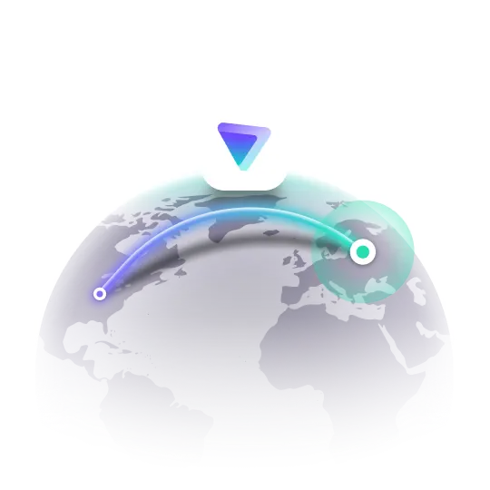

Ваша приватность в надежных руках
Современный, быстрый и безопасный неофициальный клиент для Proton VPN на Android с поддержкой AmneziaWG.

Ключевые особенности
Ядро AmneziaWG
Продвинутый протокол для обхода блокировок и поддержания высокой скорости даже в жестких условиях.
Material 3 & Compose
Полностью современный интерфейс на Jetpack Compose с поддержкой динамических цветов и тем.
Приватность
Kill Switch на уровне системы и раздельное туннелирование для полного контроля над трафиком.
Глобальная сеть
Удобный выбор серверов по всему миру с индикацией нагрузки в реальном времени.
О проекте
Proton VPN-Next — это высокопроизводительный клиент с открытым исходным кодом, созданный для тех, кто ценит скорость и современный дизайн. Мы используем лучшие практики разработки на Kotlin, чтобы обеспечить стабильность и безопасность вашего соединения.
Примечание: Это неофициальный клиент. Мы не связаны с Proton AG. Пожалуйста, поддержите оригинальных разработчиков, оформив платную подписку Proton VPN.